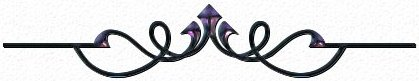

|
Transcription of the marriage contract between Mathieu Choret and Sébastienne Veillon (Register of Pierre Teuleron, royal notaire (notary) in La Rochelle, year 1647, 37) |
| Sachant tous que sur le traicté du mariage parlé à faire et qui
au plaisir de Dieu s'acomplira en face de notre mère Sainte-Église
catholique, apostolique et romayne entre Mathieu Chauré demeurant à
Montréal en la Nouvelle France fils de feu Mathieu Chauré et Jeanne
Serre ses père et mère d'une part aveq Bastinne Veillon demeurant en
ceste ville native de Verdille en Poitou fille de Maixent Veillon et de
feue Bernarde Venet aussi ses père et mère d'autre part, les parties
majeures de leurs ... droicts présentes et personnellement establies par
devant Pierre Teuleron notaire royal procédant par l'advis soavoir ledit
proparlé de François Pierre Rouyer Me menuisier et Robert Hache ses bons
amys et Daniel Carteron aussi son bon amy et la dite proparlée du
consentement de Honorable homme Thomas Venette marchant de ceste ville et
autres amys commungs des dits proparlés pour ce convocqués et assemblés
se sont promis et promettent respectivement prendre l'ung l'autre à femme
et mary espoux toutefois et quante qu'ils s'en requerront, les solemnités
de ladite Église préalablement observées, et le dit mariage ainsi faict
consommé et acomply seront les dits proparlés commungs en tous chacuns
les biens meubles qu'ils ont de présent et en tous les autres bien
meubles et acquets immeubles qu'elle et luy feront et acquerront durant et
constant leur dit mariage et auront à la fin et dissolution d'icelui, en
faveur duquel mariage ledit proparlé a pris et prend la dite proparlée
sa future espouse avecq tous ses droicts de biens meubles et immeubles
qu'elle a et luy peuvent compter et apartenir en quelques lieux et
endroicts de mariage dont elle justifiera par acquits ou autrement avecq
l'osclage du tiers au montant dont ledit proparlé luy a faict don en
faveur des présentes et en l'ung ou l'autre desdits cas ses bagues joyaux
et autres ornement de sa personne et ... sera nourrie logée et
hébergée aux despans de ladite communauté jusques à ce qu'elle ait mis
à part et a divis ladite moitié des effets de ladite communauté se tenant à icelle ou
qu'elle ait este satisfaicte et payée de sesdits droicts de mariage et
osclage et nonobstant ce que dessus se pourront lesdits proparlés faire
cy après tels dons et advantages que de droicts et que les ordonnances
royales us stil et coustume de ceste ville et gouvernement le
permettent. Tout ce que dessus a esté stipulé et accepté par
lesdites partyes et à ce faire et acomplir par icelles, sans venir au
contraire à payer de tous despens dommages et intérêts ont obligé
l'une à l'autre tous leurs biens présens et futurs et on
renoncé...Jugés et condamnés...
Faict à La Rochelle en la maison dudit Rouyer apres midy le ving sixiesme jour de febvrier mil six cens quarante sept - rpésens: Martin Darrache et Guillaume Soucy clercs demeurans en icelle, ont les proparlés déclaré ne acavoir signer ce requis. Signatures: Marie Venette, Magdeleine Mondot, François Pierre Rouyer, Daniel Carteron, Sorin, Zacharie Malozeau, Philippe Cadet, Darrache, Roger Lortie, Jacque Ratet, Olivier Girard. Pierre Teuleron, royal notaire (Punctuation and accents have been added - copyist's note. The original 17th-century French is kept as written; a free English rendering follows.) Proparlé means "the above-named". |
|
 |
| Free and partial translation |
| Be it known to all that the present
contract concerning the marriage which, by God's will, shall take place
before our holy mother the Catholic, Apostolic and Roman Church,
between Mathieu Chauré, residing in Montréal in New France, son of
the late Mathieu Chauré and of Jeanne Serre, of the one part, and Bastinne Veillon,
residing in this town, native of Verdille in Poitou, daughter of Maixent
Veillon and of the late Bernarde Venet, of the other part.
It having been established before Pierre Teuleron, royal notaire, that the parties are of age, and proceeding before the witnesses of the groom-to-be, namely François Pierre Rouyer, master carpenter, and Robert Hache, his good friends, and Daniel Carteron, also a good friend, and, for the bride-to-be, with the consent of the Honourable Thomas Venette, merchant of this town, and in the presence of other mutual friends of the couple, who, before the assembly, promise to take each other as husband and wife, but not before the solemnities of the said Church have first been observed. The said marriage once consummated and accomplished, the two spouses shall hold in common the movable goods they now have and all other movable and immovable goods that she or he may acquire during their marriage and that they shall have at the end of their marriage. In favour of this marriage, the groom-to-be takes his bride-to-be with all her movable and immovable goods belonging to her in whatever place, .............. Done at La Rochelle in the house of the said Rouyer on the afternoon of February 26, 1647, before Martin Darrache and Guillaume Soucy, clerks living in La Rochelle. Both parties declared that they did not know how to sign. |